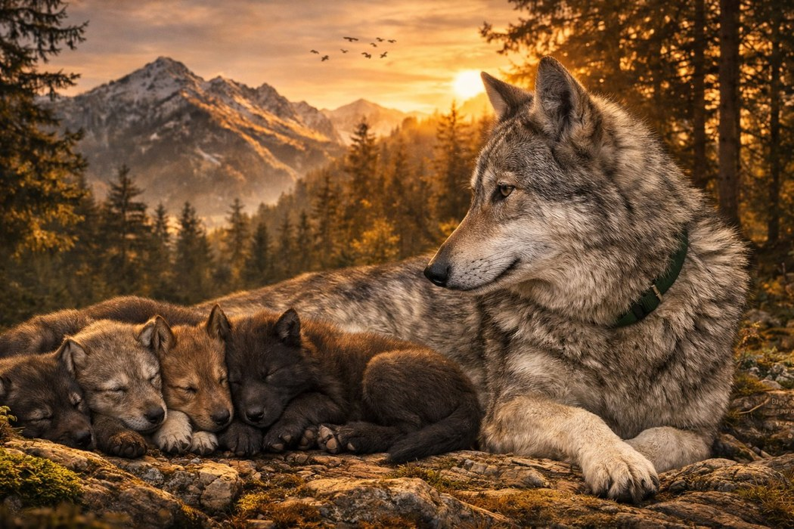

Tous nos reproducteurs sont testés génétiquement avant toute mise à la reproduction — DM, MDR1, nanisme hypophysaire, dysplasies.
Nos chiots grandissent en famille, avec nos deux chats, dans un environnement varié pour un équilibre comportemental optimal.
Notre rôle ne s'arrête pas au départ du chiot. Nous restons disponibles pour toute question, aussi longtemps que nécessaire.
Des Terres de Winoha est un petit élevage familial de chiens loups mixtes basé en Sarthe. Le nom est un hommage à Winoha, ma toute première chienne loup, adoptée en retraitée d'élevage, qui m'a ouvert les portes d'un monde à part. Aujourd'hui, avec Tara et Baska, je perpétue cette lignée en plaçant le bien-être animal et la transparence au cœur de chaque décision.
En savoir plus sur l'élevageLes dernières nouvelles de l'élevage en direct depuis Facebook.
→ Voir la page Facebook